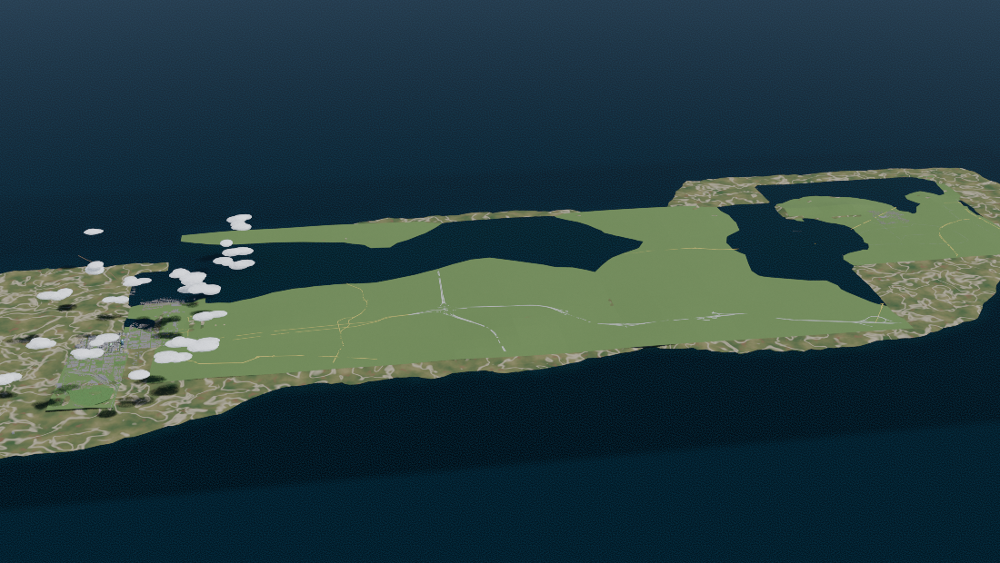

The papers
The Economic Circuit — Infrastructure Resistance and Economic Flow
An econophysical framework for localised development in under-served South African settlements. The thesis builds the group's logistics research on measured physics:
- Roads are conduits of economic potential.
- Economic hubs — CBDs, industrial nodes, ports — are sources of potential.
- Households and businesses are the terminal nodes.
- Degraded infrastructure is resistance: latent demand with no throughput.
The Ditshego Trade & Logistics simulator prices that resistance across Boom, Base and Crisis scenarios. The working paper below spells out the framework; the Blender diorama suite is its visualisation, and AURA's physical-AI research exists to cut the resistance — autonomous, SA-trained movement from depot to doorstep.

Read the paper: HTML · PDF (print) · simulator (macro-financial & logistics) and the v2/v3 diorama renders/Figure available on request. updated 2026-08-30
Token Economics and AI Compute Costs (Whitepaper)
A full analysis using SCHOOL as the case study. The thesis: AI inference and Bitcoin mining both pay for the same thermodynamic floor — the Landauer limit on the energy cost of logical operations. Compute economics is the frontier, and the venture that makes intelligence cheap wins the market that scales.
- The compute bottleneck and why it dominates model economics.
- A model taxonomy and inference optimisation reality-check.
- Ecosystem effects and what a Claude-class system costs to build lean.
Read the paper: HTML — full text, 9 chapters + appendices. updated 2026-10-09
Linking Greek Mythology, Hermeneutics, and Business Ethics
The Hermes thread — the messenger god of merchants, boundaries and eloquence — and the caduceus as dual interpretation: the two serpents read the same thing twice, the literal number and its meaning. That double reading became integrated reporting, and now an AI-hermeneutic pipeline.
This is the conceptual spine of why we run every venture on money and meaning — and why the group's AI arm is called AURA, the family name's oldest thread run forward.
Assets: whitepaper draft — available on request. updated 2026-08-30
Driving-Feel HMI + SA-Edge AV Perception (the GR concept)
Sim-racing feel turned into bounded mathematics and taught to an open VLA, so autonomous driving:
- holds a grip envelope like someone who grew up on SA roads,
- scores human-likeness against SA driving norms,
- flags SA-edge risk — taxi pull-outs, pothole swerves, unmarked intersections, livestock crossings, load-shedding-affected signalling —
- and declares its intent on a dashboard a human can actually trust.
Built on Alpamayo / Cosmos / OpenUSD, open and iterative: procedural OpenUSD demos publish now; the real weights swap in when rented A100-class compute earns it.
Assets: concept paper + demo notebook — available on request. updated 2026-08-30
How we run research
- Open vs closed, honestly. The same problem is run against open models and closed APIs, compared on two numbers: output quality and cost per token. Cross-model agreement + human review, published.
- Small first. A consumer 6 GB GPU under CUDA 13, fine-tuning open models with unsloth (QLoRA), served with Ollama. Rented NVIDIA cloud compute only when the experiment earns it.
- Statuses date; claims get links; the math is on the page.